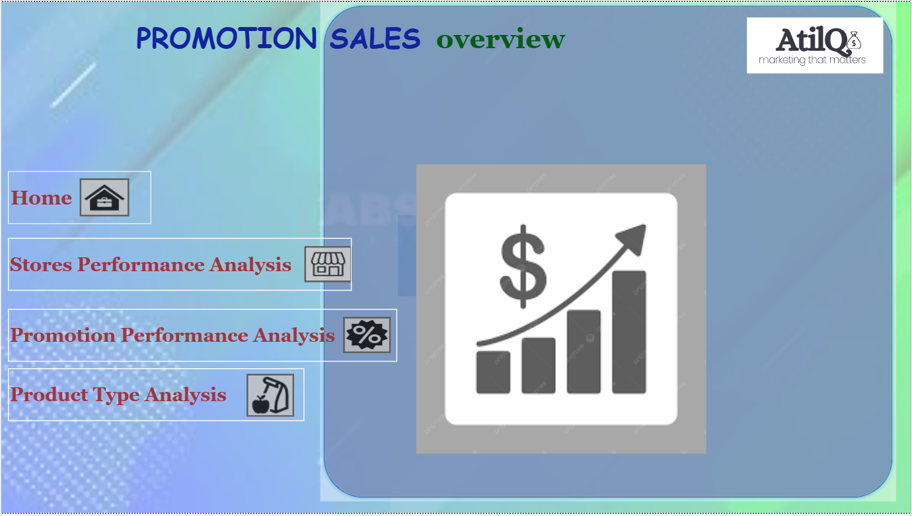
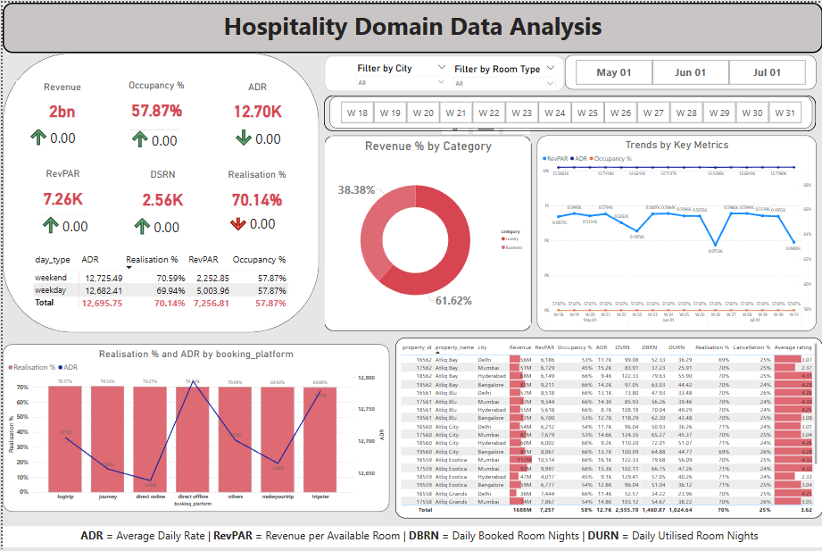

Designed under the @CodebasicsChallenge#9
Analysed promotions and Provide Tangible Insights to the Sales Director. A Power BI dashboard designed to evaluate the effectiveness of retail promotions.
Business Value: Equips sales and marketing teams with actionable insights into which promotions drive the highest incremental revenue


A comprehensive Power BI dashboard project focused on the hospitality sector. Designed under the @CodebasicsChallenge#1, this dashboard provides real-time insights into bookings, cancellations, occupancy rates, average daily revenue (ADR), and RevPAR.
Business Value: Helps decision-makers identify trends, optimize pricing strategies, monitor booking platforms, and improve occupancy through targeted tactics

A SQL-based analytics project centered around pizza sales data. Through querying order, pizza, and category datasets, this project uncovers revenue trends, popular pizza types, and order behaviors.
Business Value: Enables strategic insights into best-selling items, revenue contributions by category, and demand patterns—supporting menu optimization and operational decision-making.

A dynamic Excel dashboard that tracks key metrics for call centre performance—such as call volume, resolution time, and SLA.
Business Value: Provides managers quick visibility into operational performance, enabling data-driven staffing, training and service improvements.
Developed a text classification model that categorizes products with maximum accuracy based on description of the product.
Business Value: Makes the categorization process effective for E-Commerce platforms by accurately classifying products into relevant categories based on their descriptions.

{kind=link}
{kind=link}
{kind=link}
{kind=link}